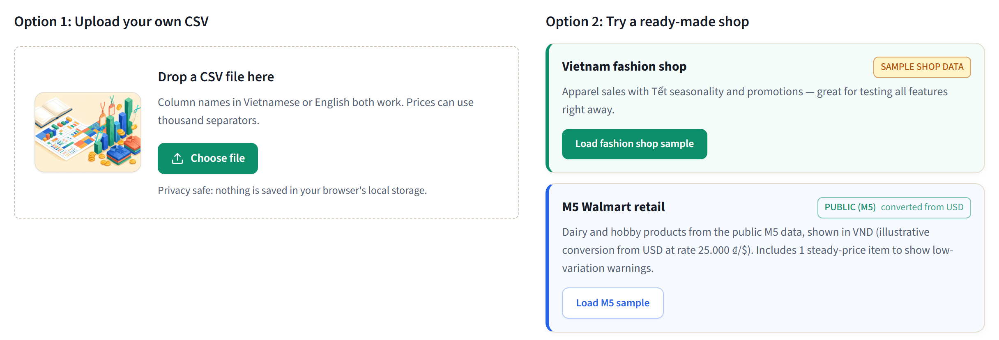
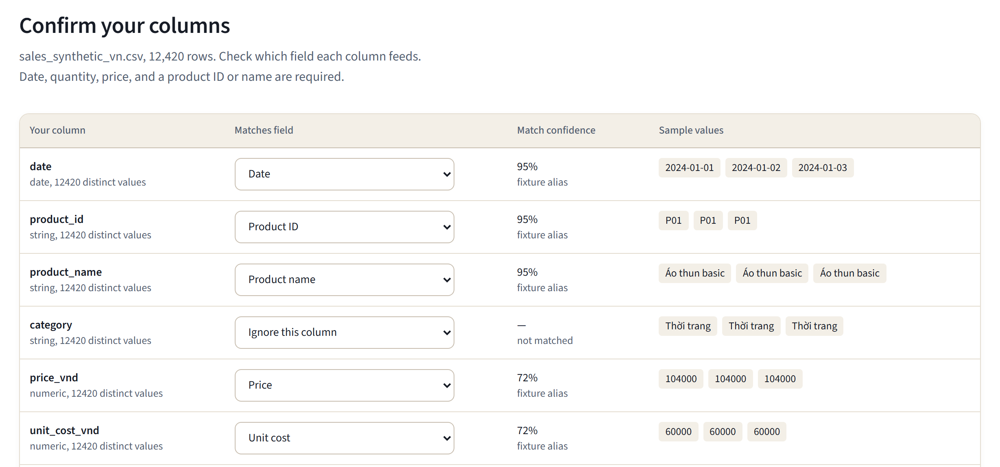
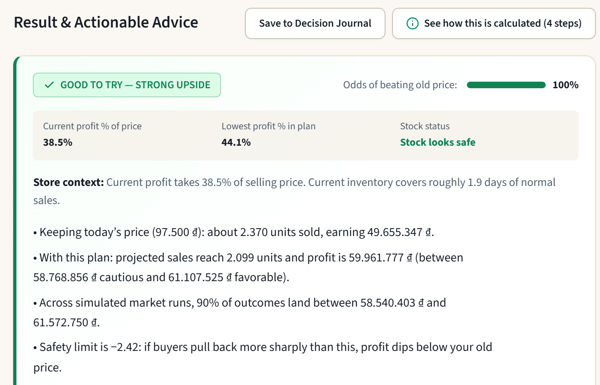
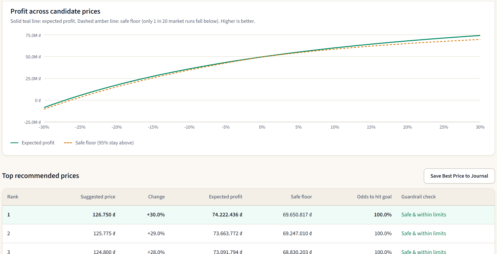
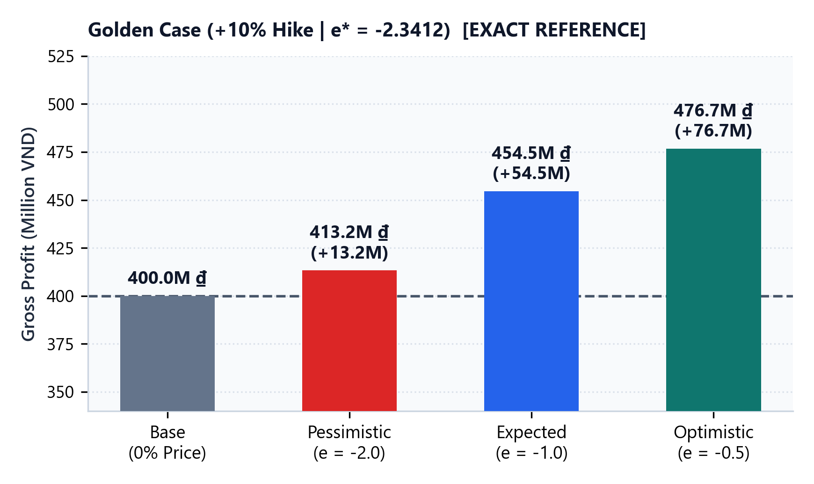
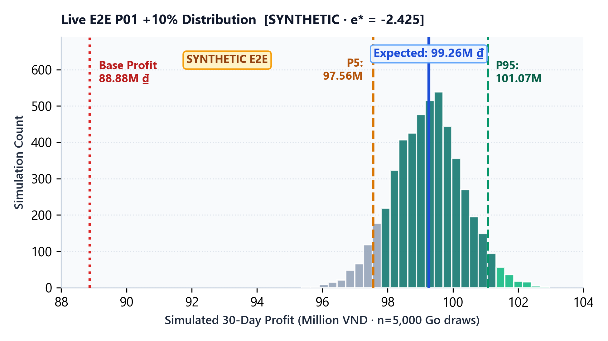
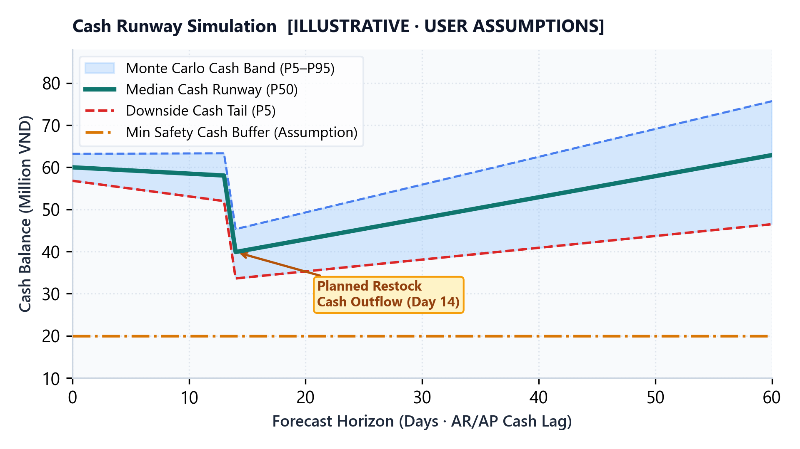
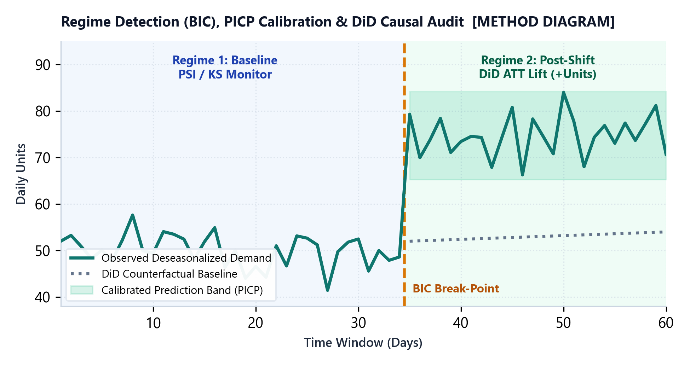
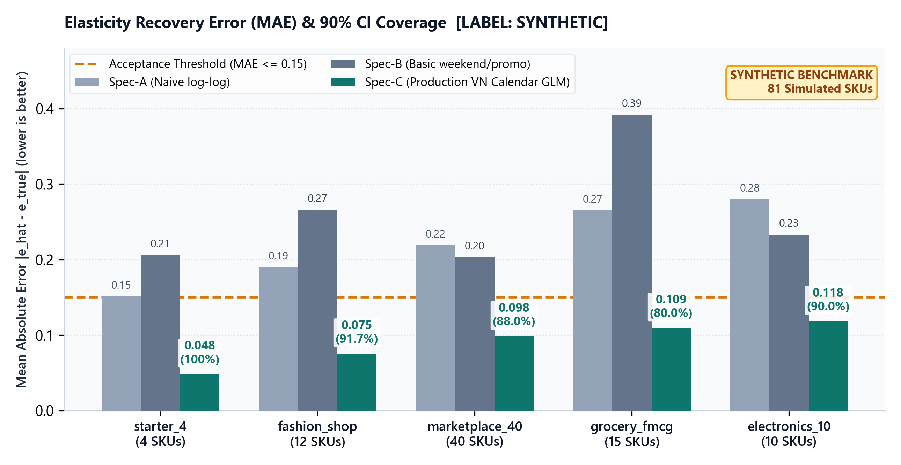
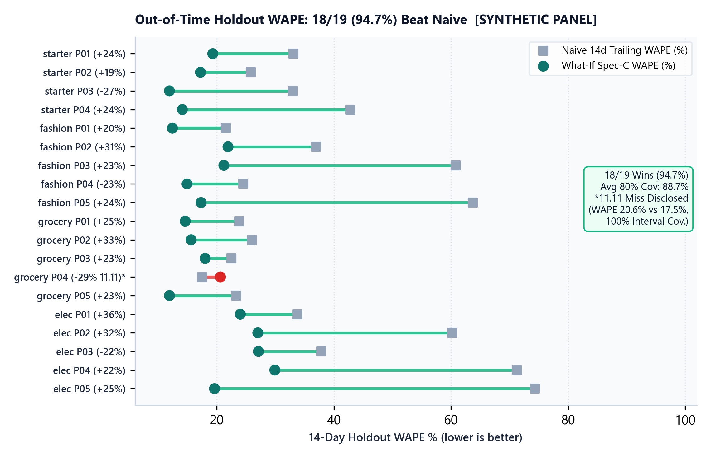

Simulate before you decide — Validate with data — Track realized profit.
Offline laptop workspace in VI | EN turning sales exports into profit ranges.
| Decision Capability | Excel / Static BI | Generic LLM Chat | What-If AI |
|---|---|---|---|
| Forward Risk Simulation | Single fixed formula | Unverified prose estimate | 5,000 draws P5–P95 range |
| Zero Fabricated Numbers | Manual sheet audit | Hallucination risk | Fail-closed check discards mismatch |
| VN Holiday Confounding | Manual cleanup | Uncontrolled guesses | Calendar GLM SYNTHETIC −5.9 → −1.8 |
| Target-Price Search | Slow 1-cell Goal Seek | Cannot optimize constraints | 38.8 ms across 101 constrained prices |
| Raw CSV Privacy | Local workbook | Prompts expose raw rows | RAM-only CSV · ≤5 masked fields |
verify_explanation_numbers() before rendering.
localStorage.decisions.db.



| Scenario | Reaction e | Gross Profit |
|---|---|---|
| Pessimistic | −2.0 | 413,2M ₫ (413.223.141) |
| Expected | −1.0 | 454,5M ₫ (454.545.455) |
| Optimistic | −0.5 | 476,7M ₫ (476.731.295) |



Flags shifting shopper behavior, seasonal turning points & rising forecast errors before bad margins compound.
Compares promoted SKUs against steady control items to report real incremental profit, not raw volume.
Saves every simulated range and logs actual post-launch profit to verify prediction reliability.

decisions.db.

Reduces naive distortion −5.9 down to −1.8 vs true −1.5 (12 hard SKUs).
8 / 8 (100%) steady-price SKUs flagged instead of guessing certainty.
sd(ln P) < 0.03 (test fixture sd=0.013).

25.000 ₫/$ illustrative). Verified today: 39 Pytest · 23 Go (-race) · 17 Vitest · 8/8 E2E · 3/3 Cross-Check.docker compose up).localStorage, or enter LLM prompts.order_id history.competitor_price_vnd feeds.sd(ln P) < 0.03), zero-stock censoring & enforces [−50%, +100%] / 7–90d.order_id receipts for cross-elasticity & Buy-X-Get-Y bundles.competitor_price_vnd for live price-gap simulation.date · sku · price · qty · unit_cost · promo · stockorder_id (bundles) · competitor_price_vnd (rivals)Clean store exports, verify margins & flag flat-price SKUs before touching live prices.
Run weekly price, promo & restock plans alongside ops; log calls to local SQLite.
Measure realized profit vs P5–P95 bands, stockout avoidance & prep time saved.
• Nguyễn Hoàng Tùng — Team Leader
• Phạm Viết Trường — Core Member
• Ngô Thanh Tùng — Core Member